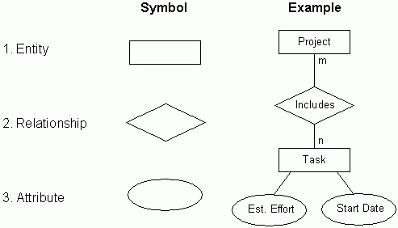
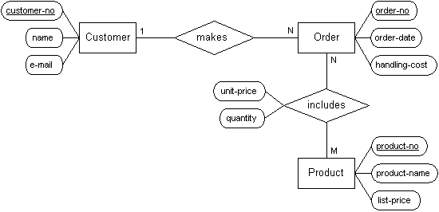

What is SQL?
Basic Concepts
An attribute is a characteristic of an entity.
Every attribute does one of three things:
A relationship is defined by the keys of the participating entities


Domains into data types & constraints
From http://dictionary.cambridge.org/dictionary/english/domain
The PRIMARY KEY constraint uniquely identifies each record in a database table.
Primary keys must contain UNIQUE values.
A primary key column cannot contain NULL values.
Most tables should have a primary key, and each table can have only ONE primary key.
A FOREIGN KEY in one table points to a PRIMARY KEY in another table.
SQL constraints are used to specify rules for the data in a table.
If there is any violation between the constraint and the data action,
the action is aborted by the constraint.
Constraints can be specified when the table is created
or after the table is created.
CREATE TABLE table_name
(
column_name1 data_type(size) constraint_name,
column_name2 data_type(size) constraint_name,
column_name3 data_type(size) constraint_name,
....
);In SQL, we have the following constraints:
Always remeber that sql queries resemble spoken language!
SELECT column_name1, column_name2, ...
FROM table_name
WHERE condition
GROUP BY column_name1, column_name2, ...
ORDER BY column_name1, ...;--Display last and first name and the title of the employees that are situated in USA and are born before 1960, alphabetically by their names.
SELECT EmployeeID, LastName, FirstName, Title
FROM Employees
WHERE Country = 'USA'
AND BirthDate < '1960-01-01'
ORDER BY LastName, FirstName;The LIKE operator is used to search for a specified pattern in a column.
Wildcard characters are used with the SQL LIKE operator.
We will need the following:
-- Returns Customers from Bern, Berlin and Bergamo
SELECT * FROM Customers
WHERE City LIKE 'ber%';
-- Returns Customers from Bruxelles, Resende, Buenos Aires etc.
SELECT * FROM Customers
WHERE City LIKE '%es%';
-- Returns Customers with regions CA and WA
select *
from Customers
where Region like '_A'-- Get all customers for whom we have fax numbers.
SELECT *
FROM Customers
WHERE Fax IS NOT NULL;
-- Get all customers for whom we do not have fax numbers.
SELECT *
FROM Customers
WHERE Fax IS NULL;